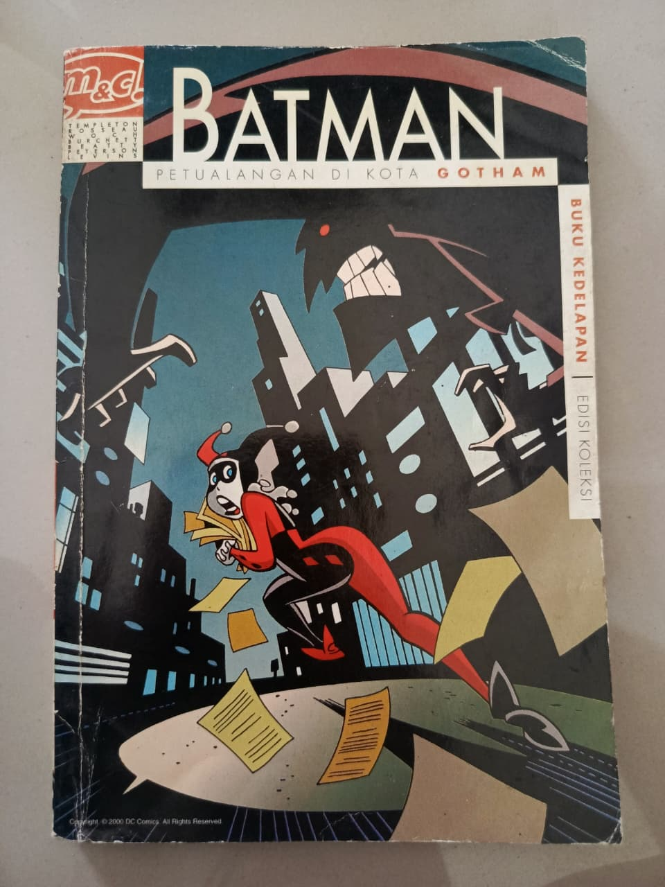
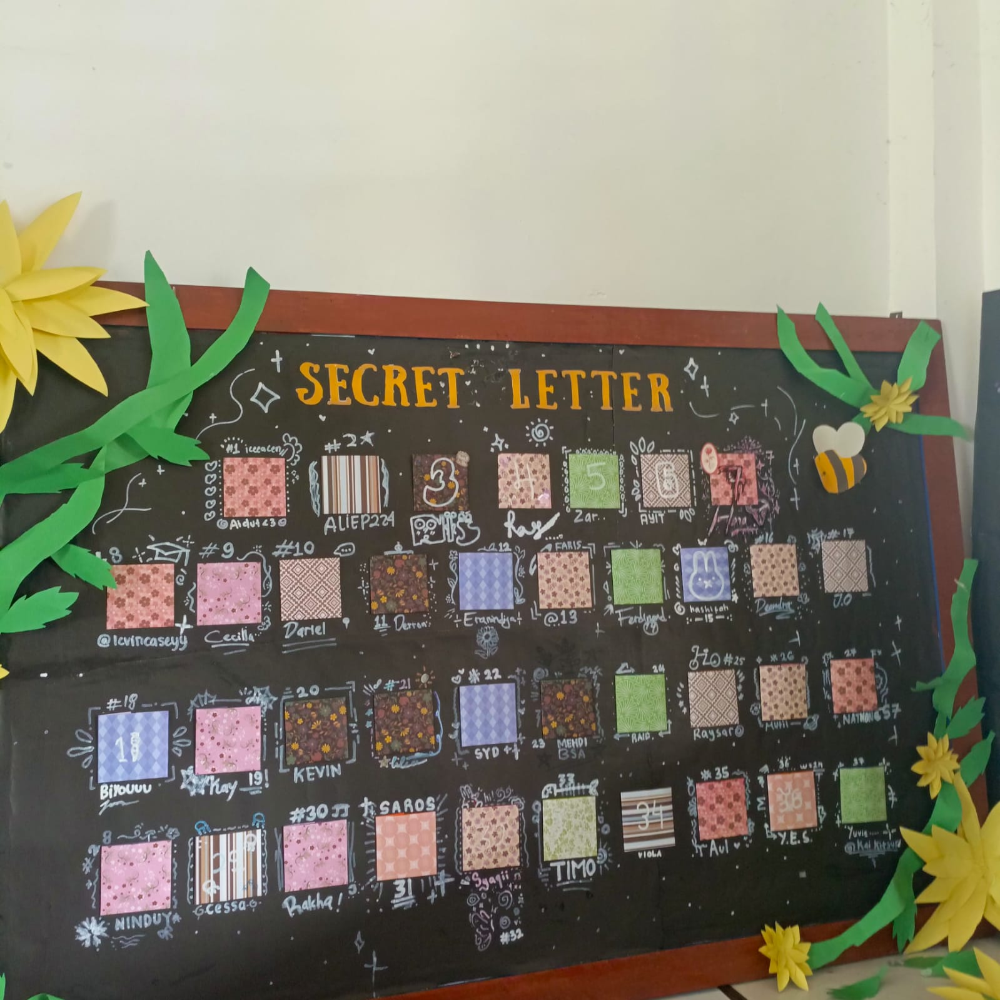
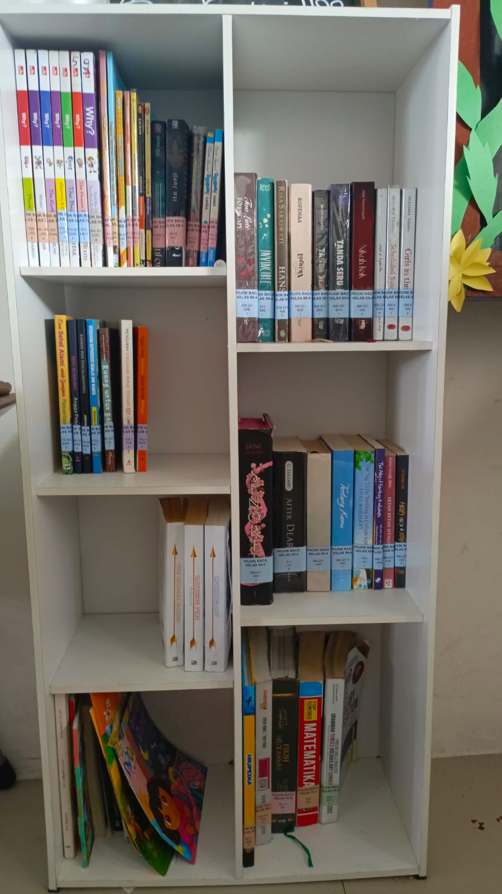
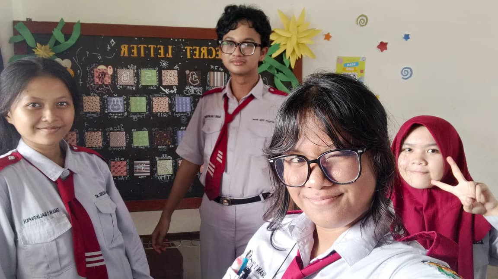

TENTANG KAMI
Cerita Pojok Baca XII-4
Tempat kecil untuk menyimpan banyak cerita, pengetahuan, dan kenangan.
Tentang Pojok Baca
Pojok Baca XII-4 merupakan ruang baca sederhana yang menyediakan berbagai koleksi buku untuk teman-teman di kelas XII-4.
Website ini dibuat untuk membantu pendataan, pencarian, dan pengelolaan koleksi buku yang tersedia di pojok baca kelas.
Bukan hanya tentang buku, pojok baca juga menjadi tempat kami berbagi ide, kreativitas, dan kenangan selama di kelas.
OUR LITTLE MEMORIES
Galeri Pojok Baca
Kumpulan momen dan cerita di balik Pojok Baca XII-4.




✿ Setiap buku punya cerita, setiap momen punya kenangan.
SEDIKIT SENTUHAN KREATIVITAS
Hiasan Pojok Baca XII-4
1 / 6